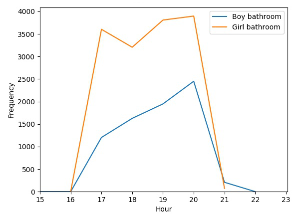
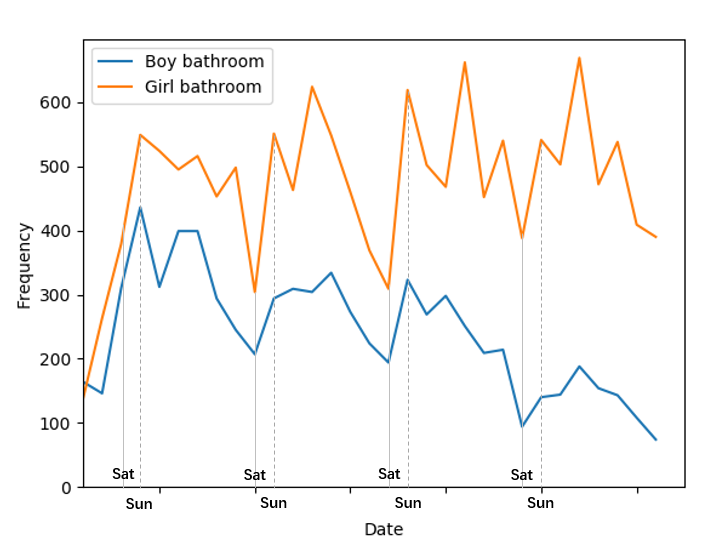
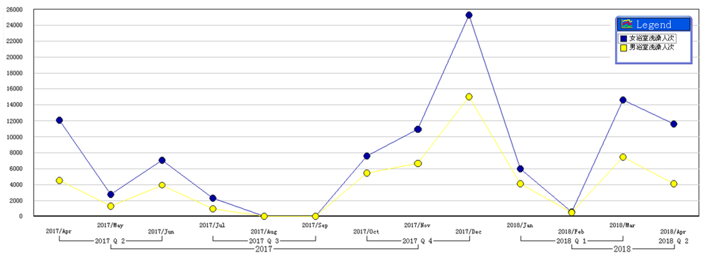
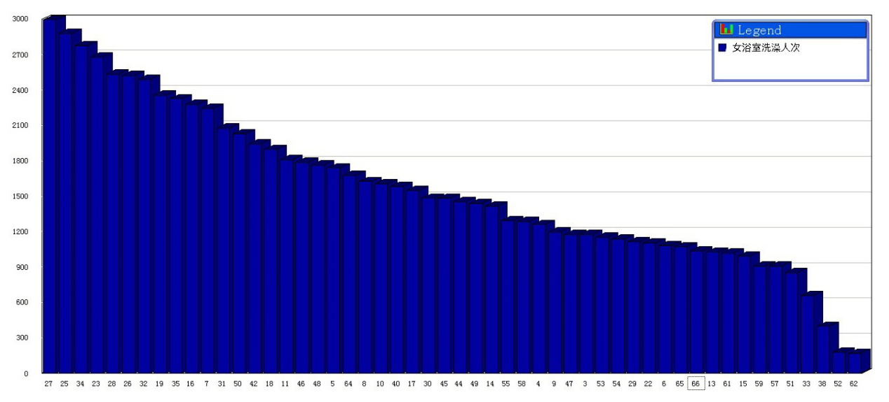
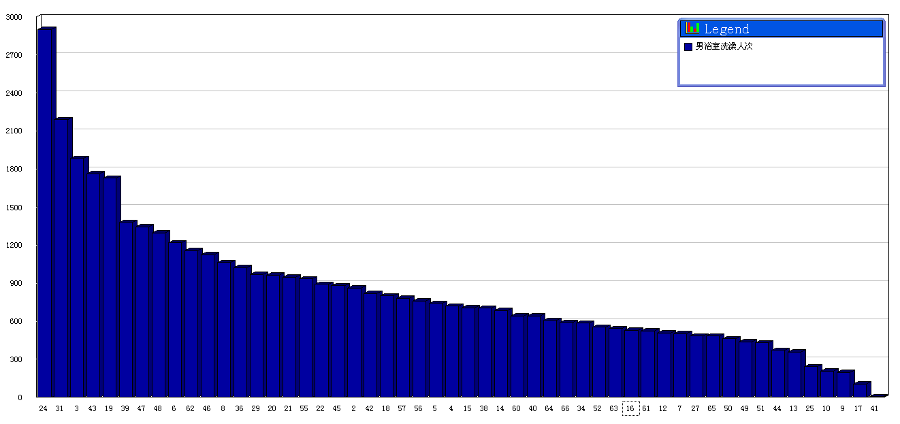
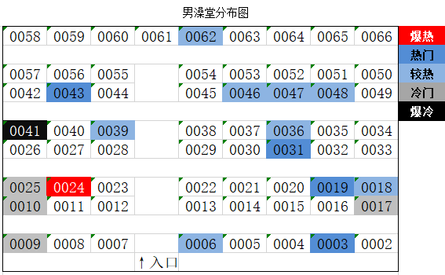

基于校园一卡通数据的用户画像分析展示
国际关系学院
校园一卡通数据用户画像分析

浴室数据分析
我们对于浴室数据的分析，主要通过三个方面进行阐述：
- 我们首先从时间维度入手，对不同单位时间内洗澡人数变化进行分析，从多角度得出学生的洗澡特点，为同学们淋浴时间提供具参考价值的建议，也为校方选择浴室锅炉大型检修时间提供建议；
- 我们将研究同学们单次洗澡的消费金额与插卡次数特点，为同学们养成良好的节约习惯提供建议；
- 我们还通过对不同位置的喷头受欢迎程度的分析，得出同学们的集体用户画像，并为同学选择淋浴位置及学校进行浴室设施单个检修或更换提出科学的建议。
淋浴时间特点分析
一天中各时间段洗澡人数分析
下图为一天中各小时洗澡频次折线图：

由上图我们可以得知：
男浴室和女浴室的洗澡高峰期普遍都集中在八点，经调查得知大多数同学比较偏爱睡前洗澡，而这是能够洗完澡的最晚时间段，因此大家都不自觉地会在八点以后扎堆洗澡。
男浴室
单独来看，男浴室的洗澡人数随着时间的流逝不断上升，八点的洗澡人数可达到五点的两倍不止，经调查得知男同学们都偏爱在7-8点左右结束运动，随后去舒舒服服地洗澡休息。
建议：
没有课程安排的男同学可以尽量错峰洗澡，即在8点之前，以缓解浴室高峰时的拥挤。
女浴室
女浴室的趋势则呈现了一个很有趣的现象，在5点达到了一个小高峰，而6点时又骤降，随后又呈逐步上升趋势，同样在8点之后达到了最高峰。原因是6点常常会存在同学们晚课以及各体育艺术社团训练的情况，致使同学们在6点多没有时间去浴室洗澡。
建议：
没有课程和其他活动安排的女同学可以选择6点时洗澡。
给学校的建议
- 经过分析得知，8点到9点时间段的洗澡人数最高，同学们也有许多是在浴室关闭前不久才去洗的澡，经调查得知，同学们都希望学校的浴室开放时间得以延长。因此我们建议后勤中心将浴室开放时间延至9:30，以满足多数同学们的需求。
一周内不同日期洗澡人数分析
下图为连续一月的不同日期同学们的淋浴频次趋势折线图：

由上图我们可以看出：
- 以星期为周期的数据显示，工作日的五天中洗澡的频次似乎没有呈现出一定的规律性。但就周末而言，不论男女，周日的洗澡频次总是会达到一个小高峰，伴随着周六与周一的小低谷。看起来同学们都喜欢在周日的晚上洗澡，这似乎是一种仪式，洗去一周的疲惫与不堪，以一个全新的自己面对新一周的工作与生活。
- 周六洗澡人数的低谷，也许与两年前学校浴室周六并不开放而导致的周六不洗澡的习惯有关，但无论如何，学校将周六不开放浴室这个不太人性化的规定取缔，对同学们都是一个大大的福利。
建议：
大三大四或研究生的师哥师姐们周六不爱去浴室洗澡的习惯可能已经改不掉了，希望大一大二的师弟师妹们以及新入学的研一师哥师姐，可以把周末洗澡的这个仪式酌情的错峰挪到周六，避免周日挤在一起导致没有办法完整的执行。
一年当中不同月份洗澡人数分析
以下是我们所搜集到的所有数据中男女浴室各月洗澡频次折线图：

由上图我们可以看出：
洗澡人数高峰的月份为12月，低谷期为5月（排除1/2/7/8月时假期同学们回家以及澡堂开放时间减少的影响）。
这似乎是一个不那么合理的结论，毕竟一般来说，人们在夏天的洗澡频次都要较冬天多得多。我们分析，这种反常的结果是夏天温度高时宿舍楼内的太阳能淋浴间为澡堂分忧而导致的。同时，这也说明，冬天时较低频率的洗澡需求，仍然不能够平衡宿舍楼中的淋浴间在同学们洗澡选择中所占的重要地位。寒冷的冬天澡堂锅炉的负荷远要比夏天多得多。
建议
- 学校的有关部门在冬天尤其要加强锅炉的保护及维修工作，以保障其高负荷的运作。
- 鉴于北京的冬天太阳依旧晴朗，希望尽量推迟宿舍楼淋浴间太阳能水管的关闭时间，一来为同学们洗澡创造方便，能够多一份选择，二来缓解浴室的锅炉供热压力，还能更加环保节能。
学生单次淋浴消费分析
下图为平均同学们人均每天洗澡的插卡次数及每次插卡的消费金额分布：


由上图我们发现：
- 插卡次数：大部分用户插卡次数都集中在2~3次，有小部分同学整个过程中只进行了一次插卡。
- 单次插卡花销：单次插卡的大部分情况下，消费金额约0.3~0.9元，经统计，每个同学单次的洗澡消费约在1.5～2.7元之间，也就是人均洗澡过程中放水淋浴时间约在5~9分钟。
但是由于不同类型的同学相互间影响过大，本数据并不能十分切合的反映出同学们的平均淋浴情况。但是通过以上比较，我们可以根据同学们的淋浴特点对同学们做一个分类：
“舒适型”同学：洗澡时间长且不间断。
形成原因：
- 他们偏向于追求洗澡的舒适性，喜欢洗澡过程中一直淋浴来追求舒适感；
- 经调查得知有的同学曾有过因洗澡过程中拔卡导致卡掉入沟槽的悲惨经历，因此决定减少甚至戒掉洗澡过程中取卡的习惯。
“节约型”同学：在不需要冲水时把卡拔出以节约用水，淋浴时间短且间断。
形成原因：
- 将调查得知，多数同学认为学校浴室的水费价格偏高，因此他们不得不通过频繁拔卡的方式来减少洗澡开销，但引发的结果是校园卡掉入沟槽事故发生更频繁，有的同学对在浴室洗澡的满意度降低。
建议
- 希望学校对于插拔卡的安全问题予以重视，比如设计更易拆拔的沟槽隔板、设计放卡更保险的校园卡计时收费机或是每天都安排专门人员对于浴室沟槽坠物问题进行挽救等；
- 如果可以，希望学校可以考虑对于浴室水费的收费标准加以改进，比如为了鼓励同学们节约用水，实行分阶段的计费标准，对单次插卡超过5分钟的校园卡增加收费力度，而对小于5分钟的校园卡则降低收费标准等。如此一来，相信会有更多同学愿意为节约用水贡献自己的一份力量，减少浴室浪费水资源的行为；
- 我们在统计分析过程中发现有同学忘记拔卡，会导致水一直放的不良现象发生，如此建议学校对于单次插卡累计时间超过20分钟的校园卡消费计时机予以暂停本次插卡消费。这样一来，浪费水资源的现象会大大减少。
浴室不同喷头的使用情况分析
女生浴室
下图为女生浴室不同喷头一年内累计消费次数条形统计图：

同时我们也对女生浴室各喷头实际位置作了实地调查：

从上面的信息，我们可以看出：
- 女浴室的热门喷头集中在进门左手边，空间较为狭小的地方，以及靠里却又不是最远的一排位置上。位置的私密性和路程是影响结果最为重要的两大因素。
- 两个爆冷的喷头，许是因为位置太过于靠边，但凡途中有遇到合适的位置都不会再往里头走，反而是比较冷门的那几喷头，位置不算太偏僻，所以我们推测，这几个喷头可能年久失修，不经用了。
男生浴室
下图为男生浴室不同喷头一年内累计消费次数条形统计图：

同时我们也对男生浴室各喷头实际位置作了实地调查：

结合上图我们可以看出：
- 男同学们对浴室不同位置喷头的偏爱程度似乎分布较为平均，与位置和私密性都并无太多的直接关联。
- 男生浴室第24号喷头的淋浴频次尤其高，远超排名第二的喷头。我们推测，可能是因为这个喷头不但出水充裕，隐私性比较好，鉴于他周围的喷头效果可能都不太理想，周围淋浴的人少，所以这个喷头更加受欢迎。
- 男生浴室还有一个爆冷的喷头，年消费频次不超过100，极大可能是因为年久失修造成的。
- 男生浴室冷门的位置都靠近过道或窗户，附近空气流动大，温度低，导致使用次数少；同时这些位置的损坏可能性较大。
给后勤服务部门的建议
- 洗澡人次较少的几个喷头，可能都存在设施损坏或者故障等问题，建议及时排查维修。他们一般都分布在靠窗的位置。此外，据了解，对于上图中浴室年消费频次低于1800的喷头同学们的评价都不太好，出水不充足或是喷头漏水等，希望后勤部门能多多加强浴室的维护，使大家更充分利用澡堂空间，避免拥挤。
- 由靠近窗户的位置喷头使用人次少可知，学校浴室的保暖工作可以更加有效，有些同学反映浴室周围的窗户容易漏风，在窗户周围洗澡会比较寒冷。为了保证同学们的身体健康，以及浴室喷头资源的充分利用，建议加强浴室保暖工作的进行。